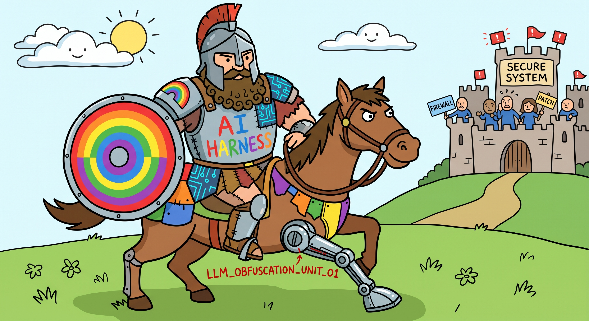

The AI scene is changing fast. We see a lot of interesting research, but we do not have full access to the LLMs, their harnesses, their setups, and the supporting tools and code.
REDORAS is an educational lab for studying AI systems as systems - with systems thinking, resilience engineering, chaos engineering, rainbow teaming, and reproducible behavioral analysis - using customizable harnesses we build ourselves. The stated goal is to arrive at our own custom harness.
Read the full project hub in the README.

Scope - read this first
REDORAS is resilience and reproducible-behavioral-analysis research on systems you own or are authorized to test. It is not a dual-use offensive-security toolkit.
Full policy: Governance.
The system is not the model. Behavior emerges from the whole.
REDORAS treats an AI system as model + harness + infrastructure + data + evaluation loop, and studies how it behaves, how it fails, and how to make it resilient.
Pillars
Start anywhere; each pillar is a self-contained doc.
Systems Thinking - boundaries, stocks and flows, feedback loops, delays, emergence, leverage points, and mental models. Why behavior cannot be read off a single component.
Resilience Engineering - resilience vs robustness, Safety-II, the four potentials, graceful degradation, SLOs and error budgets, and AI-specific failure modes.
Chaos Engineering - steady-state hypotheses, blast radius and abort conditions, the experiment lifecycle, and AI-specific fault injection with authorization preconditions.
Red Teaming - rainbow teaming: open-ended generation of diverse adversarial prompts for coverage, plus taxonomies, mutation, coverage metrics, and human review.
Reproducible Behavioral Analysis - the reproducibility contract: pinned revisions, seeds, prompt manifests, hashes, behavior diffing, and statistical replication.
Harnesses (tools) - the inventory of building blocks used to compose a harness, grouped by function, each tied to the pillar it serves.
Custom Harness (the goal) - the project's destination: a declarative, pluggable, reproducible harness for behavioral experiments, specified in Markdown today and built later.
Inspirations
Rainbow Teaming - the site that names the approach: generating a diverse, open-ended set of adversarial prompts to map behavior rather than chasing a single exploit.
Rainbow Teaming: Open-Ended Generation of Diverse Adversarial Prompts - the paper behind the idea, and a reference for coverage-driven testing.
Building a Vulnerability Discovery Harness - Dan Jones, Red Team Engineer @ Cloudflare, on what it takes to build a harness that finds behavior.
Ready to go deeper?
Read the README for the full hub, or jump straight to the tools inventory and the harness design.